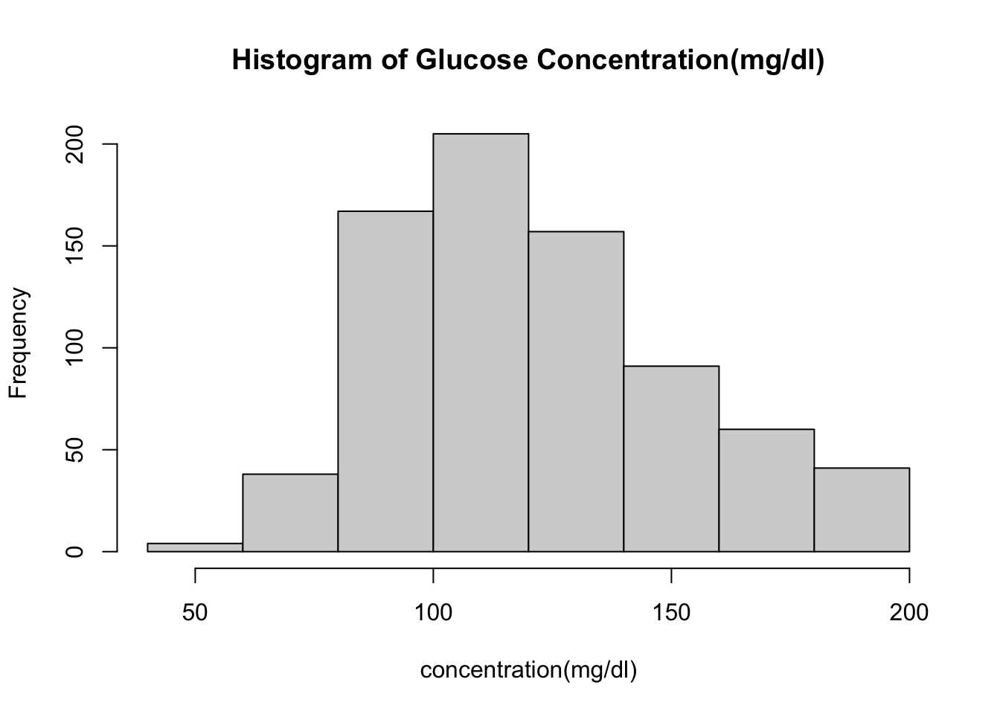

| Characteristic | N = 7681 |
|---|---|
| num of Pregnancies | 3.0 (1.0, 6.0) |
| Glucose concentration (mg/dl) | 117 (99, 141) |
| Unknown | 5 |
| dose of theophylline (mm/hg) | 72 (64, 80) |
| Unknown | 35 |
| tricep thickness (mm) | 29 (22, 36) |
| Unknown | 227 |
| serum insulin levels (mL) | 125 (76, 190) |
| Unknown | 374 |
| BMI | 32 (28, 37) |
| Unknown | 11 |
| Pedigree score | 0.37 (0.24, 0.63) |
| Age (yrs) | 29 (24, 41) |
| diabetes_5y | |
| neg | 500 (65%) |
| pos | 268 (35%) |
| 1 Median (IQR); n (%) | |
Quarto try 3
| Characteristic | OR1 | 95% CI1 | p-value |
|---|---|---|---|
| Glucose concentration (mg/dl) | 1.04 | 1.03, 1.04 | <0.001 |
| Number of Pregnancies | 1.12 | 1.05, 1.19 | <0.001 |
| Age (yrs) | 1.01 | 0.99, 1.03 | 0.2 |
| BMI | 1.10 | 1.07, 1.13 | <0.001 |
| 1 OR = Odds Ratio, CI = Confidence Interval | |||
'data.frame': 768 obs. of 9 variables:
$ pregnancy_num : num 6 1 8 1 0 5 3 10 2 8 ...
$ glucose_mg_dl : num 148 85 183 89 137 116 78 115 197 125 ...
$ dbp_mm_hg : num 72 66 64 66 40 74 50 NA 70 96 ...
$ triceps_mm : num 35 29 NA 23 35 NA 32 NA 45 NA ...
$ insulin_microiu_ml: num NA NA NA 94 168 NA 88 NA 543 NA ...
$ bmi : num 33.6 26.6 23.3 28.1 43.1 25.6 31 35.3 30.5 NA ...
$ pedigree : num 0.627 0.351 0.672 0.167 2.288 ...
$ age : num 50 31 32 21 33 30 26 29 53 54 ...
$ diabetes_5y : Factor w/ 2 levels "neg","pos": 2 1 2 1 2 1 2 1 2 2 ...The median age was (29 (24, 41))
num [1:768] 148 85 183 89 137 116 78 115 197 125 ...[1] 155
the histogram @fig/fig-hist is a histogram of a variable in @tbl-one